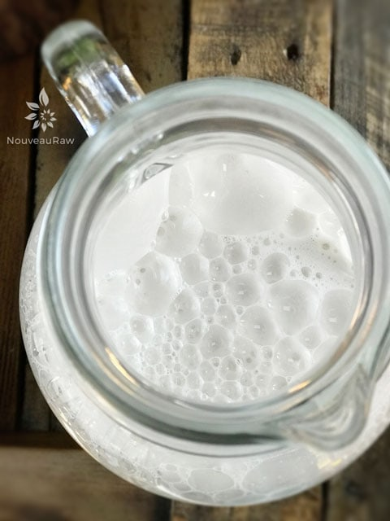

Almond Sesame Milk
 ~ raw, vegan, gluten-free ~
~ raw, vegan, gluten-free ~
Growing up, along with each meal, my mom would set down a tall glass of cold milk in front of me. It always seemed to loom over me, as though it was a highrise building. I didn’t much care for milk unless it was sweet cereal infused. (can I get an “Amen”)
I can still get a sense of my body language as that glass of milk approached the table as if in slow motion. My shoulders shuttered and slumped; my lips took on an involuntary snarl, and my eyelids became heavy as if they couldn’t possibly stand to see that glass get placed in front of me.
But then along came the food, and it’s as if life resumed normal speed. Soon the chatter of the house came back into tune; I could hear my mom’s voice, I could sense the house cat rubbing against my leg, I could smell all the pleasant food aromas in the air (even if it was boxed Mac’N’Cheese).
As I happily scooped my fork into the food, taking in one delicious bite after another… soon, my mother’s voice would sputter… “Drink your milk!” The room’s atmosphere would change once again; I swear it darkened… my shoulders shuttered and slumped, that snarl, darn that snarl it always got me in trouble. “Drink and don’t be wrinkling that face of yours; otherwise, it will permanently stay that way.”
That was my childhood memory of milk, so it’s not too surprising to hear that even as I eased into my adult years, milk was never part of my meal planning… unless it was infused with sweet cereal. (somethings never change hehe). As my eating habits shifted, so did my “milk” drinking habits. I found that I loved almond milk, mainly because I could doctor it up in many creative ways. Today, I am sharing just one version that includes sesame seeds.
Multi-tasking Seeds
Sesame seeds contain more calcium than milk as well as an impressive amount of magnesium, which, together with vitamin D, is essential for calcium absorption. They are alkaline, rich in zinc (think bone health), copper (anti-inflammatory), as well as sesamin and sesamolin (which can lower cholesterol and help prevent high blood pressure). Who knew that there was so much goodness packaged up all nice and tidy in those itty-bitty seeds?!
Unhulled or Hulled?
That is the question. Sesame seeds offer the most nutritional value when the whole seed is used (un-hulled), but when left whole, they don’t break down during digestion, much like flax-seeds whereas hulled sesame seeds are stripped of many of its nutrients. The beauty of using unhulled seeds in this particular application is that they are going to be pulverized in the milk-making process; therefore, they will be easy to digest.
I enjoy sesame seeds but not in large doses. The flavor is very pronounced (to me), and they can have a bitter taste, but I found that by blending them with almonds, it tempers their flavor and makes for wonderful milk. To bump up the level of nutrients, flavor, and texture, I also added a few other ingredients. Most of the added ingredients are self-explanatory, but I want to touch base on why I add sunflower lecithin quickly.
Why I add sunflower lecithin.
Sunflower lecithin is made up of essential fatty acids and B vitamins. It helps to support the healthy function of the brain, nervous system, and cell membranes. It also lubricates joints and helps break up cholesterol in the body.
It comes in two forms, powder and liquid. I switch back and forth between both versions. It’s up to you to decide which one you prefer. The liquid has a thick, dark, and sticky consistency with a nutty-seedy rich aroma and surprisingly pleasant flavor. Whereas, the powder tends to be blander in taste which is useful when you don’t want even to detect a trace of it. Setting aside all the nutritional benefits, it is a natural emulsifier that binds the fats from nuts with water creating a creamy consistency. Perfect for milk making. I hope you enjoy this simple recipe. Blessings, amie sue
yields 3 cups
Preparation:
Soaking process:
- Place the almonds and sesame seeds in a glass or stainless steel bowl and cover with 3 cups of water.
- Do not use plastic bowls for soaking.
- Make sure you add enough water to keep the almonds covered, as they absorb water, they plump up a little.
- Keep the bowl at room temperature and cover with a breathable cloth. If something comes up and you won’t be able to use the nuts within the 24 hours, store them in the fridge, changing the water 2x a day.
- If there are any floating nuts, toss them. That can be an indicator of the nuts being rancid. Better to be safe than sorry. Think of them as “floaters are bloaters.”
- Add 1/4 tsp of Himalayan pink salt; this helps activate enzymes that de-activate the enzyme inhibitors.
- Soak for 8-24 hours.
- This process is excellent not only for reducing phytic acid but also softens the nuts, making them easier to blend into a smooth, silky texture.
- Skipping the soaking process will result in less creamy milk.
- If you already have soaked/dehydrated almonds in the freezer or fridge, I suggest soaking them again to soften them.
- To read more about why it is essential to soak nuts and seeds, click (here).
Blending process:
- Once the almonds and sesame seeds are done soaking, drain, rinse, and discard the soak water.
- Do not reuse the soak water for the milk-making process. This water is full of the phytic acid/enzyme inhibitors that were drawn out during the soaking process.
- Place them in a high-powered blender along with the freshwater.
- Start the blender on low and work up to high, then blend for 30-60 seconds or until the nuts have been pulverized.
- A high-powered blender will accomplish the job much easier.
- If you don’t own one such as a Vitamix or Blendtec, you might have to blend for 1-2 minutes.
- Add the lecithin, sweetener, oil, and pinch of salt. Blend until creamy.
Straining the milk:
- Turn the nut bag inside out, putting seams on the outside for easier straining, cleaning, and faster drying.
- Place the nut milk bag in the center of a large bowl.
- Instead of a nut bag, you can drape cheesecloth over the edges of the bowl and pour the milk through it. I find this process messier, and it doesn’t seem to filter it as well.
- Desperate? Don’t have a nut bag or cheesecloth while you are vacationing in France? Take off one of those silky-French knee-high nylons, wash it, and pour the milk through it. I am here, always thinking for you. :)
- With one hand holding the nut bag, pour the liquid into the bag. Lift the bag, and the milk will start to flow through the mesh holes in the bag. The finer the mesh, the more filtered the milk will be.
- Gather the nut bag (or cheesecloth) around the almond meal and twist close.
- Squeeze the nut pulp with your hand to extract as much milk as possible.
- Do not toss the nut pulp. Freeze or dehydrate it, which then can be used in other recipes such as smoothies, crusts, cookies, crackers, cakes, or raw breads.
Flavoring:
- I recommend flavoring your milk after the pulp has been removed. That way, the pulp remains neutral in flavor for other recipes.
- Add the sunflower lecithin, coconut oil, sweetener, and a pinch Himalayan pink salt. Blend for 20 seconds on high.
Thickeners and Emulsifiers:
- Lecithin – thickener and emulsifier
- Add up to 1 Tbsp per every 2-3 cups of water used.
- I highly recommend sunflower over soy lecithin.
- Coconut butter/manna
- Add up to 1 Tbsp per every 2-3 cups of water used.
- Do not use coconut oil. It hardens when chilled and may create small gritty pieces in the milk
- Nut butters:
- Add up to 1 Tbsp per every 2-3 cups of water used
- If using store-bought, watch for added ingredients such as salt.
Storing and expiration:
- Store the milk in an airtight glass container such as a mason jar.
- Always label the contents and the date that it was made.
- If, for some reason, separation still does occur, shake the jar before serving, and the milk will come back together.
- Fridge – The milk can last anywhere from 3-5 days in the refrigerator.
- If the nut milk prematurely sours, it may be from an unclean blender, nut milk bag, or poor quality nuts.
- Freezer – There are several ways to store nut milks in the freezer. Freeze for up to 3 months.
- Pour the milk into ice cubes trays and freeze; this is great for plopping into smoothies.
- Freeze in 1 1/2 pint freezer-safe jars.
- It is crucial that you only freeze glass jars that are made for freezing. I have tested this, and sure enough, I have had jars crack on me, resulting in throwing everything in the trash — sad day.
- You can use smaller jars for better portion control if you don’t plan on using a full 1 1/2 pints worth.
- Pay attention to the “maximum freeze line” indicated on the jar. If you don’t see that, then it’s another indicator that the jar isn’t safe to place in the freezer.
Nut bag maintenance:
- It is crucial to keep the nut milk bag clean!
- Wash with organic, scent-free soap, such as Dr. Bronners. Do not use laundry soap. (always refer to the manufacturers cleaning method as well)
- Rinse well air dry. Ideally, in the direct sun to receive free sterilizing from the warm rays. Nylon nut milk bags should not be placed in the sun as the ultraviolet rays can damage the nylon.
- Do not hang the bags outside on the clothesline to dry. We don’t want an air-raid of bird poop coming down on it.
- Proper bag storage –
- I like to roll mine up and store in a glass jar to help keep it clean, protect it from dust, and accidental hole damage. A holy bag has no purpose when it comes to nut milk making.
- Also, if you use nut bags for multiple reasons, it would be a good idea to store them in separate jars, labeling them for their purpose, such as; nut milks, juicing, sprouting.

© AmieSue.com